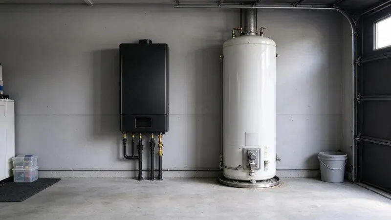
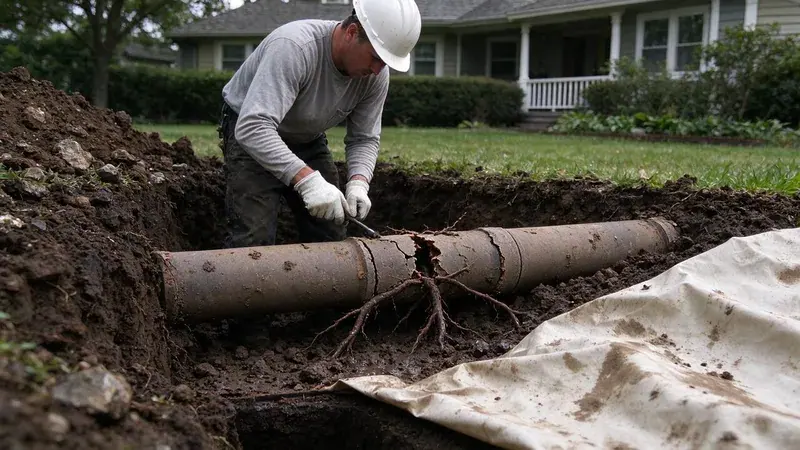
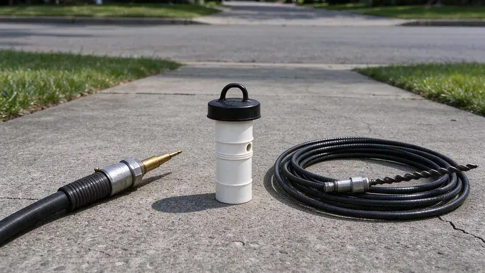
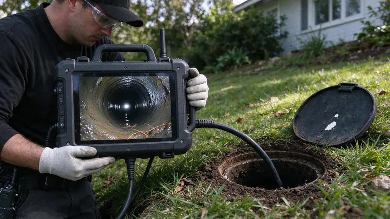

Plumbing Tips & Updates From HRL Plumbing
 15Oct, 2026
15Oct, 2026Slab Leak Warning Signs Every Ohio Homeowner Should Know
Plenty of Ohio houses sit on a concrete slab with the water lines buried underneath. Here is how to spot a leak before it spreads.
 6Oct, 2026
6Oct, 2026How to Protect Your Pipes Before the Next Ohio Freeze
Most frozen-pipe damage is preventable. Here is how to get a Ohio home ready in a few hours.
 27Sep, 2026
27Sep, 2026Hard Water in Ohio: When a Water Softener Pays for Itself
The white crust on the faucet is the part you can see. This is what scale does where you cannot see it, and when softening is worth the money.

18Sep, 2026Tankless vs. Tank Water Heaters: What Works Best in Ohio
Both kinds of water heater have a place. Here is how to pick the right one in Ohio.
 9Sep, 2026
9Sep, 2026Kitchen Sink Backups: Causes, Prevention and Quick Solutions
Nothing stalls a kitchen like a sink full of standing water. Here is why it happens and what to try before you call.

31Aug, 2026Underground Pipe Damage: Common Causes and Modern Repair Solutions
A broken pipe underground does not always mean a trench across the yard. Here is how buried lines fail and how it gets fixed.

22Aug, 2026Hydro Jetting vs. Snaking: Which Drain Cleaning Method Do You Need?
Which tool you need depends on what is in the pipe. Here is when a snake is enough and when jetting is worth it.

13Aug, 2026Why a Sewer Camera Inspection Belongs on Every Ohio Home Inspection
A regular inspection does not look inside the sewer line. Here is why Ohio buyers add a sewer scope before closing.
Have a plumbing question we did not cover?
Our team is happy to talk it through and give you a straight answer.